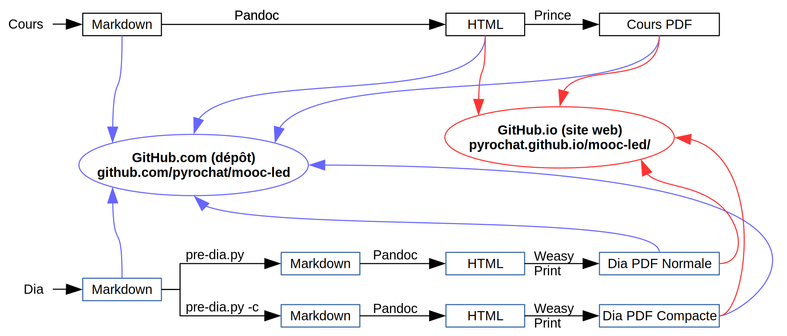

Conférence Microclub
Outils collaboratifs pour la rédaction et l’édition
Nicolas Jeanmonod
11 mars 2016, Microclub, EPFL
Outils collaboratifs pour la rédaction et l’édition
Outils collaboratifs pour la rédaction et l’édition
Outils collaboratifs pour la rédaction et l’édition
Parce que les techniques montrées dans cette conférence peuvent être utilisées lorsqu’on a besoin :
Outils collaboratifs pour la rédaction et l’édition

Outils collaboratifs pour la rédaction et l’édition

Outils collaboratifs pour la rédaction et l’édition
Un langage de balisage enrichit l’information textuelle brute d’une information sémantique.
Comparaison processus WYSIWYM vs WYSIWYG
Markdown
# Un titre
Écrire un paragraphe
- Faire une listeHTML
<h1>Un titre</h1>
<p>Écrire un paragraphe</p>
<ul>
<li>Faire une liste</li>
</ul>Traitement de texte

Outils collaboratifs pour la rédaction et l’édition
Outils collaboratifs pour la rédaction et l’édition
Outils collaboratifs pour la rédaction et l’édition
Outils collaboratifs pour la rédaction et l’édition
Outils collaboratifs pour la rédaction et l’édition
Outils collaboratifs pour la rédaction et l’édition
Le Markdown est conçu pour être :
- facile à lire et à écrire
- être transformé en HTML
En Markdown traditionnel↵
un paragraphe se termine avec deux retours↵
à la ligne.↵
↵
Donc les 3 lignes ci-dessus ne forment qu’un seul
paragraphe.Outils collaboratifs pour la rédaction et l’édition
# Titre de niveau 1 #####################
Autre syntaxe pour niveau 1
===========================
## Titre de niveau 2
Syntaxe _alternative_ pour niveau 2
-----------------------------------
### Titre de niveau 3 incluant [un lien](http://example.com/)
#### Titre de niveau 4Outils collaboratifs pour la rédaction et l’édition
Paragraphe normal
> Début du bloc de citation
>
> * élément de liste
> * second élément
>
>> Décalage de 2ème niveau, usage de _styles_
Markdown, <u>balises</u> HTML
>
> Bloc de code dans la citation
Retour à l'alignement normalOutils collaboratifs pour la rédaction et l’édition
<br/>\ à la fin de la ligne précédant le saut.
Outils collaboratifs pour la rédaction et l’édition
Le PFM est aussi appelé “Pandoc’s extended Markdown”
<br/> en ajoutant un “\” en fin de ligne# Exemple{ attribut="10cm" }
Outils collaboratifs pour la rédaction et l’édition
pandoc \
--standalone \ # doc HTML entier
--from markdown \ # format source
--to html \ # format cible
--highlight-style pygments \ # rendu de code
--email-obfuscation references \ # anti-spam
--normalize \ # enlève doubles espaces
--css=$CSS_FILE \ # fichier CSS
--output output.html \ # fichier de sortie
input.md # fichier en entréeOutils collaboratifs pour la rédaction et l’édition
Outils collaboratifs pour la rédaction et l’édition
Outils collaboratifs pour la rédaction et l’édition

Outils collaboratifs pour la rédaction et l’édition
prince \
input.html \
-o output.pdfOutils collaboratifs pour la rédaction et l’édition
weasyprint \
input.html \
output.pdfOutils collaboratifs pour la rédaction et l’édition

Outils collaboratifs pour la rédaction et l’édition
Outils collaboratifs pour la rédaction et l’édition
Outils collaboratifs pour la rédaction et l’édition
Outils collaboratifs pour la rédaction et l’édition
Outils collaboratifs pour la rédaction et l’édition
git blame pour voir qui a fait quoi sur un fichier.)
Outils collaboratifs pour la rédaction et l’édition
Outils collaboratifs pour la rédaction et l’édition
Outils collaboratifs pour la rédaction et l’édition
Outils collaboratifs pour la rédaction et l’édition
Outils collaboratifs pour la rédaction et l’édition
Outils collaboratifs pour la rédaction et l’édition